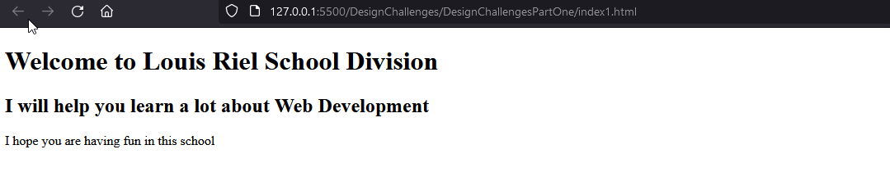
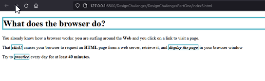
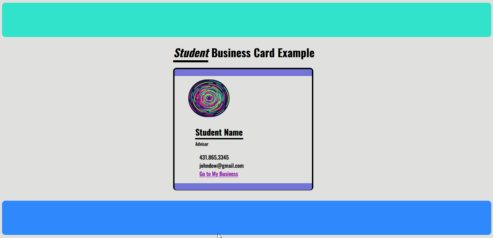
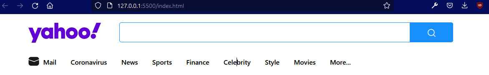

Web Design and Development Evening Program
In this program you will learn how to create websites, both responsive and functional as well as some other useful tools.
Here are the projects we have built so far



